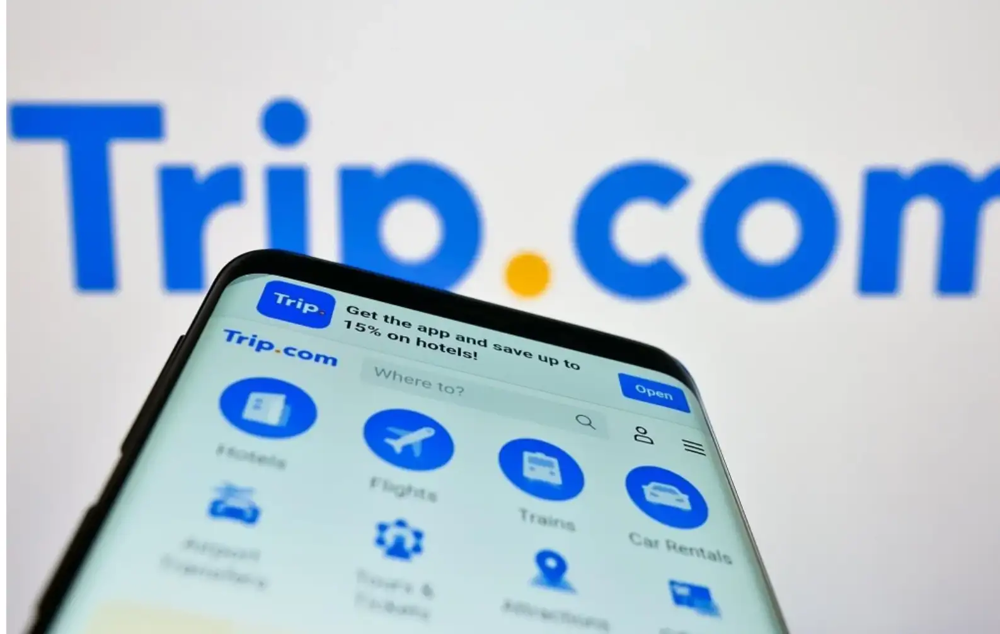

Tripcom 不是第二个 Booking.com——它对华人出境游真的更懂
把 Tripcom 放进在线旅行代理商的坐标系里重新审视，看看它在同类工具里的差异化优势和适用场景，帮纠结选哪款出境游 App 的人做判断。
在线旅行代理商（OTA）这个赛道从来就不缺玩家。Booking.com 在欧洲站稳了脚跟，Expedia 覆盖北美，Skyscanner 靠比价搜索起家，Google Flights 又把"搜机票"这件事做到了极致。在这样一个饱和的市场里，Tripcom官网作为携程的国际版出海产品，定位其实有点微妙——它不是要和这些巨头正面拼全球覆盖，而是瞄准了一个被大厂忽略的细分群体：有出境游需求的华人用户。
同类工具里它排什么位置
先说清楚 Tripcom 在这个品类里的坐标系。如果你是一个英语流利、熟悉欧美本地支付体系的旅行者，那 Booking 或 Expedia 确实是更自然的选择，它们在本地酒店库存和欧美小语种客服上做得更扎实。但如果你是以下场景：人在国内持人民币或银联卡、出行习惯更偏亚洲节奏、偶尔需要订中国高铁票或日本新干线、希望整个行程的预订和管理都在一个中文界面里完成——Tripcom 的价值就出来了。
它不是试图做"所有人的 Booking"，而是"华人出境游的一站式管家"。这个定位让它在某个细分市场里的体验反而是一流的。

它独有的几个做得明显更好的点
从核心功能往细节挖，Tripcom 有三处是同类工具里做得比较突出的。
价格提醒不只是"告诉你降价了"
Skyscanner 也有价格提醒功能，但两家的产品思路完全不同。Skyscanner 的提醒更像是一个独立的比价工具——你设置好路线和目标价，它邮件或推送通知你，收到之后你还是要回到 Skyscanner 或者跳到航司官网去完成预订。
Tripcom 把提醒和预订流程绑得很紧。收到降价提醒之后，点通知直接进入预订页，目标价格已经帮你锁定在搜索结果的排序里，确认支付就行。这个体验上的差别听起来不大，但对于一个每天可能同时盯着三五条热门航线票价的用户来说，少一次跳转就意味着少一次犹豫、少一次被别家的广告干扰。
另外，Tripcom 的价格提醒默认对整条航线生效，也可以限定特定月份，配合它的灵活日期搜索——日历视图上前后 7 天甚至整个月的最低票价一眼就能看到——这两个功能组合起来，对出行日期灵活的人来说是真的能省出一截预算的。
一站式整合的深度超过预期
OTA 行业的一个通病是：喊"一站式"但实际做不到。Booking 上订了机票，酒店要单独搜，租车又是另一个页面，最后管理行程还要装个单独的 App。Tripcom 在这方面走得更彻底一些。
最能体现这个整合深度的是国际火车票预订。欧洲之星、德国 ICE、法国 TGV、日本新干线、中国高铁——这些线路分属不同国家不同铁路运营商，专门的火车票平台比如 Trainline 在欧洲线路上可能价格更低，但你要一个一个平台切换，日本的票还要去 JR 官网，中国高铁甚至不是随便哪个海外平台都能订的。Tripcom 把这些都拉进了同一个搜索框里，出发站到达站支持中英双语输入，实名制车票的旅客信息一次填写全程复用。
机票、酒店、火车票、租车、当地玩乐甚至机场接送——真的在一个 App 里搜完、订完、管理完。想查具体线路覆盖和预订规则的话，翻一下Tripcom文档会更清楚。打包价的力度偶尔会给惊喜，尤其是提前一两个月规划行程的时候，机票加酒店再加租车的套餐价经常比分开订加起来便宜不少。
中文界面和支付体系不是凑数的
很多"国际版"产品把中文界面做成了表面功夫——翻译腔重、部分功能路径和英文版不一致、支付还是只收当地信用卡。Tripcom 不一样，中文界面是产品本身的一部分，搜索筛选条件的命名、预订流程里的提示语、客服沟通方式，都是按照中文用户的操作习惯设计的。
支付这块支持银联和支付宝，对国内用户来说几乎没有门槛。下载安装也很方便，直接从官方下载拿就行。而那些本地支付体系不兼容的出境游产品，就算功能再强，最后也卡在支付这一步上。
这些优势背后是有取舍的
说了好的，也得说清楚 Tripcom 不擅长什么，免得读完觉得它是全能的。
首先，专门平台在各自的垂直领域里通常做得更极致。专门的火车票平台在欧洲线路上的价格可能比 Tripcom 低一些，租车的话 Hertz 或 Avis 官网偶尔会有只在自家渠道放的优惠活动。Tripcom 的策略是"你不用比我更便宜，但你得让我省事"——在同一个地方完成所有预订这件事本身，就是它在价格上打不过专门平台时给出的另一种价值。
其次，它的欧美本地小酒店库存确实不如 Booking 深。Booking 因为深耕欧洲多年，很多家庭旅馆、小精品酒店只在 Booking 上架。Tripcom 在这块主要靠连锁品牌和国际酒店集团撑着，如果你出行的目的地喜欢住小众民宿或设计酒店，Booking 还是更值得对比一下。
还有一个小问题是，部分东南亚目的地的本地支付方式支持不够灵活。虽然支付宝和银联覆盖了主流场景，但如果你在泰国或马来西亚的一些小城市遇到只收本地电子钱包的商户，Tripcom 这边就帮不上忙了。
选购结论
总结一下：
如果你是有出境游需求的华人，习惯用中文界面操作，希望整个行程的预订和管理都在一个地方搞定，尤其是可能涉及跨境火车票或需要用银联/支付宝支付——Tripcom 是目前市场上体验最贴合你的选择。别再纠结"它是不是比 Booking 便宜"，比省心和适配度，Tripcom 对华人用户的照顾是实打实的。
如果你追求极致的单项功能、只订某一类产品（比如只订欧洲火车票、只找小众民宿），那专门的垂直平台或者对应的本地 OTA 可能更合适。Tripcom 不是为这些场景设计的，它的优势恰恰是"什么都能订，但每一项都做到够用且顺手"。
我自己的做法是：Tripcom 作为出境游行程的主预订工具，在下单前对价格敏感的话再去专门平台比一轮，省心和省钱之间取个平衡。大多数时候 Tripcom 给出的打包价已经够有竞争力，不需要来回折腾了。顺手提一句，这套资料我同步放在了GitHub、Gitee、GitCode三个仓库，国内访问哪个顺手就看哪个。